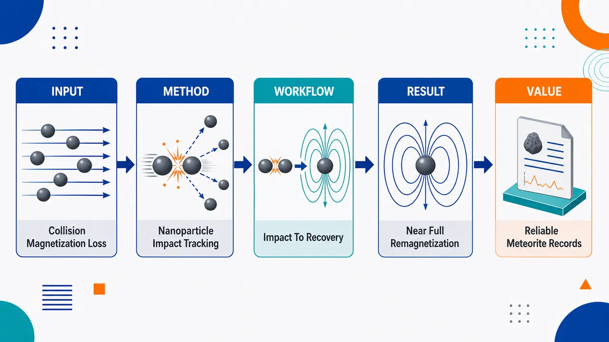
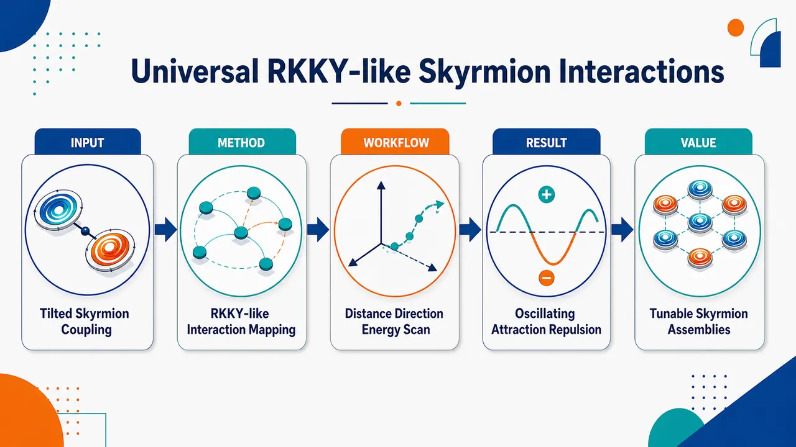
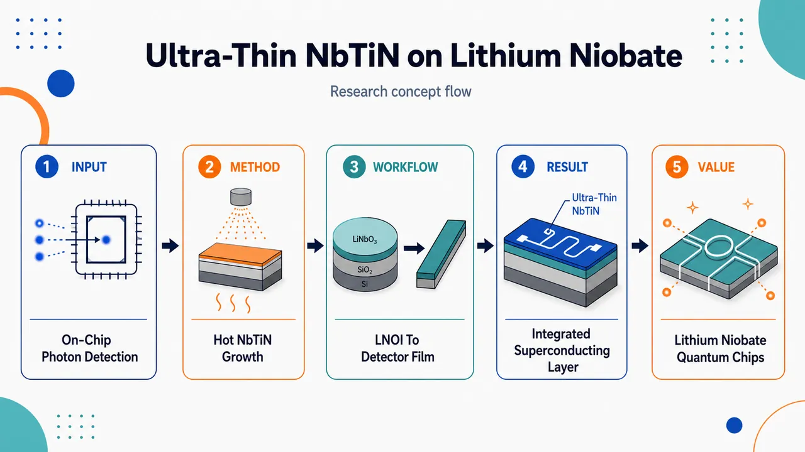
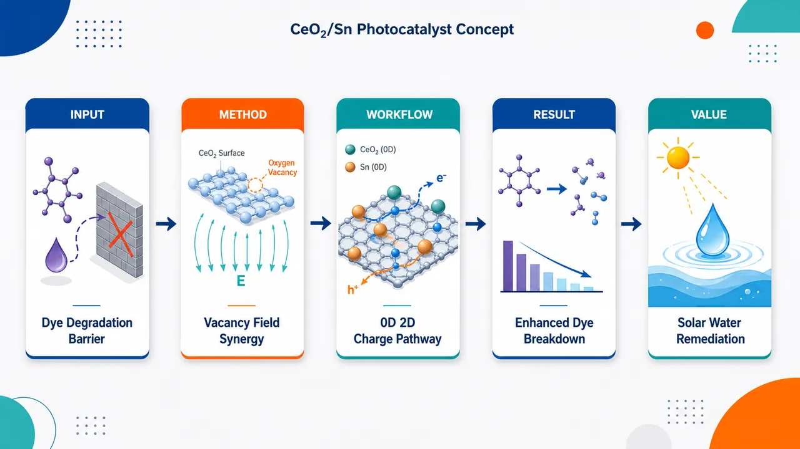
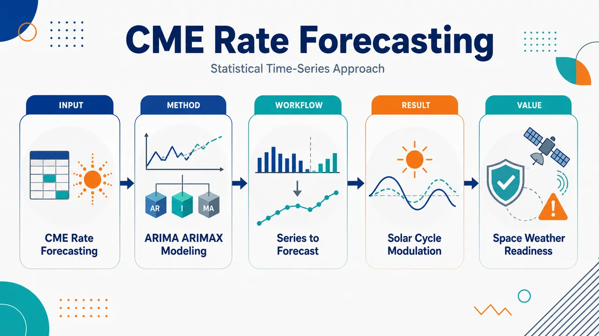

AI × Science 文献日报 2026/06/22
聚焦 AI × 物理 / 化学 / 材料交叉方向，自动过滤明显偏题的医学、教育与社会科学内容，并按主题重新排版，便于快速深读。
AI | 物理 | 化学 | 材料 | 交叉学科
原始候选 38 篇中，已剔除 0 篇明显偏离主线的内容，并从剩余 38 篇主线相关文献中精选 32 篇进入日报页，优先保留 AI × 物理 / 化学 / 材料交叉与关键计算方法工作。
核心关注（ML × ferro / 凝聚态）
8 篇本日实质进展分成两类：Fe3O4/铁氧化物纳米颗粒与磁铁矿-石墨烯纳米流体把实验设计、响应面/回归和AI代理模型直接接到合成与传热参数。BaTiO3/Al2O3共掺铁电聚合物、CsGeI3铁电卤化物钙钛矿和铁电超晶格显示界面、位错与量子几何比单一极化强度更能决定介电储能和体光伏输出。磁性侧从铁谷二维材料、磁结构相变铁磁体到手性磁体倾斜斯格明子，关键变量转向堆垛、相变熵和纹理尾部相互作用。与近期用equivariant GNN、MACE、NEP和DFT+U处理NbOI2、CrI3、CrSBr、BaTiO3的势能面、磁交换与极化预测相比，今日论文更偏向低维描述符、可解释物理模型和实验闭环。
-
01铁氧化物纳米颗粒合成优化与染料去除预测Integrated Experimental-Machine Learning Framework for the Synthesis Optimization and Predictive Modeling of Iron Oxide Nanoparticles in Dye Removal Applications
📄 摘要：围绕共沉淀法制备铁氧化物纳米颗粒，用实验设计与机器学习预测晶粒尺寸和比表面积。比较沉淀剂后，氨水给出更小晶粒 86 Å 和更高比表面积 87.23 m²/g；中心复合设计考察 30–90 °C、100–600 rpm、15–75 min 对产物性质的影响，并用于染料去除应用建模。
💡 亮点：铁氧化物纳米颗粒合成被转化为可优化的实验-机器学习问题，氨水沉淀获得 86 Å 晶粒和 87.23 m²/g 比表面积。该流程连接纳米结构参数与染料吸附性能，适合材料工艺数据驱动优化。
📐 方法要点：CCD实验设计+回归/ML，预测晶粒尺寸、比表面积与染料去除。
🔗 相关工作关联：呼应纳米材料贝叶斯优化、响应面法、工艺-结构-性能代理模型。
💡 对你方向的启示：把沉淀剂、温度、转速、时间编码成特征，可做主动学习合成闭环。
-
02受限共掺介电膜的高储能性能Enhanced energy storage performance of confined co-doping dielectric films via nanoparticle self-assembly in ferroelectric phases
📄 摘要：在同轴静电纺丝纤维的铁电芯层中引入 BaTiO3 与 Al2O3 纳米颗粒，形成受限共掺聚合物介电膜。高极化 BaTiO3、宽带隙 Al2O3 与 BaTiO3/Al2O3 异质界面协同提升介电储能表现，界面调控同时服务于极化增强和击穿抑制。
💡 亮点：BaTiO3/Al2O3 被限制在铁电芯层内自组装，利用高极化、宽带隙和异质界面协同提高聚合物介电储能。该策略把纳米颗粒空间分布作为调控极化与击穿的关键变量。
📐 方法要点：同轴静电纺丝限域BaTiO3/Al2O3，自组装异质界面调控储能。
🔗 相关工作关联：呼应铁电聚合物复合介质、击穿场ML筛选、界面极化工程。
💡 对你方向的启示：ML特征不只填料含量，还应显式加入核壳限域和异质界面拓扑。
-
03磁铁矿-石墨烯纳米流体非傅里叶传热建模Artificial Intelligence Modelling of Non-Fourier Heat Transport in Magnetite-Graphene Hybrid Nanofluid for Sensor Applications
📄 摘要：针对磁铁矿-石墨烯/水-乙二醇杂化纳米流体，在多孔传感器表面上分析非定常 MHD 挤压流、黏性耗散和非傅里叶传热。材料的高导热、磁响应和强化换热被用于传感器表面热稳定性、灵敏度和工作效率建模；题名显示采用人工智能描述热输运行为。
💡 亮点：磁铁矿-石墨烯杂化纳米流体被用于传感器表面非傅里叶热输运建模，耦合 MHD 挤压流与多孔边界条件。该方向将纳米流体热物性与 AI 代理模型结合，服务微电子与生物传感热管理。
📐 方法要点：AI代理描述MHD挤压流中非傅里叶传热和纳米流体响应。
🔗 相关工作关联：呼应PINN热输运、纳米流体ANN/NARX建模、磁响应传感器热管理。
💡 对你方向的启示：可把磁场、孔隙率、热松弛时间作为可学习控制变量。
-
04铁谷材料中的压电操控与堆垛磁性Piezoelectric manipulation and stacking-dependent magnetism in ferrovalley materials
📄 摘要：理论提出谷-压电耦合策略，在铁谷二维体系中同时调控反常谷霍尔效应和层霍尔效应。第一性原理框架用于分析压电响应、电子输运与堆垛相关磁性之间的联系，强调该机制可推广到一般谷电子材料。
💡 亮点：铁谷二维材料中把压电应变与谷输运联系起来，可协同操控反常谷霍尔效应和层霍尔效应。堆垛依赖磁性使该类体系适合可重构谷电子器件设计。
📐 方法要点：DFT框架解析谷-压电耦合、输运与堆垛依赖磁性。
🔗 相关工作关联：呼应铁谷电子学、二维磁体堆垛调控、Berry曲率/反常霍尔计算。
💡 对你方向的启示：数据集应记录层间平移、极性应变和磁序，避免只按化学式学习。
-
05磁结构相变削弱磁热效应与磁化率Decrease of magnetocaloric effect and magnetic susceptibility of ferromagnet due to magnetostructural phase transition
📄 摘要：基于自旋交换能和磁子系统熵建立模型，描述发生磁结构相变的铁磁体磁化强度随温度变化。通过拟合实验磁化曲线提取相变物理参数，并计算磁场诱导温变和含顺磁过程贡献的磁化率；结果表明磁结构相变虽导致磁化突变，却会降低磁热效应和磁化率。
💡 亮点：铁磁体磁结构相变被纳入交换能-熵模型后，可从磁化曲线反推出控制参数。关键结论是相变引发的磁化突变并不必然增强磁热效应，反而可能削弱温变与磁化率。
📐 方法要点：交换能+磁熵模型拟合M-T曲线，提取磁结构相变参数。
🔗 相关工作关联：呼应磁热材料Landau模型、磁化率反演、相变热力学建模。
💡 对你方向的启示：训练磁热预测模型时需区分磁化突变与可逆熵变贡献。
-
06铁电超晶格中过应变弛豫与位错极性拓扑Over‐Strain‐Relaxation State and Dislocation‐Governed Polar Topologies in Ferroelectric Superlattices
📄 摘要：Advanced Materials EarlyView 论文聚焦铁电超晶格的过应变弛豫状态及位错支配的极性拓扑。题名指向外延应变释放、位错结构和极化纹理之间的耦合关系，面向铁电薄膜中拓扑畴结构的微观控制。
💡 亮点：铁电超晶格在过应变弛豫条件下形成由位错调控的极性拓扑。该体系把缺陷工程引入铁电拓扑纹理设计，有助于理解外延应变释放后的畴结构演化。
📐 方法要点：外延超晶格中过应变弛豫，位错网络支配极性拓扑表征。
🔗 相关工作关联：呼应相场模拟、STEM畴成像、铁电拓扑畴和涡旋/斯格明子极化。
💡 对你方向的启示：构建薄膜ML特征时应纳入位错密度、应变梯度和界面周期。
-
07铁电卤化物钙钛矿位移电流的超高 Glass 系数Record-high Glass coefficient in the shift current response of a ferroelectric halide perovskite
📄 摘要：在铁电卤化物钙钛矿 CsGeI3 中研究位移电流响应。位移电流是源于波函数量子几何变化的二阶非线性光学效应，提供不同于传统结型光伏的机制；论文报告该材料具有创纪录高 Glass 系数，凸显铁电极化和卤化物钙钛矿能带结构对体光伏响应的放大作用。
💡 亮点：CsGeI3 在铁电卤化物钙钛矿中表现出创纪录的 Glass 系数，把量子几何驱动的位移电流推向高响应区间。该结果强化了无结体光伏与铁电极化工程的凝聚态关联。
📐 方法要点：测算CsGeI3位移电流，量化超高Glass系数与量子几何。
🔗 相关工作关联：呼应体光伏、shift-current DFT、铁电卤化物钙钛矿非线性光学。
💡 对你方向的启示：筛选光伏铁电体需把极化、带隙和shift vector联合建模。
-
08手性磁体中倾斜斯格明子的普适 RKKY 类相互作用Universal RKKY-like Interactions Between Tilted Skyrmions in Chiral Magnets
📄 摘要：分析手性磁性薄膜中两个倾斜斯格明子之间的相互作用，发现其本征上各向异性、非中心且振荡。沿特定方向改变间距时，相互作用在排斥和吸引间周期切换，类似金属中局域自旋的 RKKY 相互作用；物理来源被归结为斯格明子自旋纹理中此前未识别的普适波纹尾部。
💡 亮点：倾斜斯格明子之间存在非中心、各向异性且可在吸引/排斥间振荡的 RKKY 类相互作用。该普适波纹尾部为斯格明子晶格稳定性和可编程相互作用设计提供微观机制。
📐 方法要点：解析倾斜斯格明子波纹尾部，得到各向异性振荡相互作用。
🔗 相关工作关联：呼应手性磁体微磁模拟、RKKY类相互作用、斯格明子晶格动力学。
💡 对你方向的启示：学习斯格明子集体行为时需超出短程排斥势，加入方向性长程项。
今日摘要
总览：今日题目集中在铁电、磁性拓扑与界面量子材料：铁电卤化物钙钛矿的位移电流格拉斯系数、铁电超晶格中过应变松弛诱导的位错支配极性拓扑、铁谷材料中压电操控与层叠依赖磁性、手性磁体倾斜斯格明子间长程振荡相互作用。另一个密集板块是数据驱动与非平衡输运：铁氧化物纳米粒子染料去除的实验—机器学习闭环、四氧化三铁—石墨烯杂化纳米流体的非傅里叶热输运建模、量子代价景观的梯度可扩展性与泰勒代理、含噪数字和模拟量子仿真的稳定性。材料化学与器件侧覆盖二氧化铈/二硒化锡零维/二维异质结、二氧化钛一维纤维膜、铬磷硫四配体调控磁耦合、钴酸镧界面轨道占据与自旋态、铌钛氮超薄膜在铌酸锂上的高温生长及单光子探测集成。
热点：热点一：铁电与磁性拓扑耦合 → 用应变松弛、位错、层叠序、压电场和手性相互作用调控极性涡旋、铁谷磁性与倾斜斯格明子相互作用 → 典型工作包括铁电超晶格的过应变松弛态、铁谷材料的压电操控、手性磁体中倾斜斯格明子的鲁德曼－基特尔－粕谷－吉田型相互作用。热点二：界面轨道、自旋与光电流工程 → 通过配体桥接、异质界面、内建电场和表面氧空位重排轨道占据、自旋态及载流子分离 → 典型工作包括铬磷硫四跨变磁转变的配体介导磁耦合、钴酸镧界面轨道占据和自旋态控制、二氧化铈/二硒化锡异质结光催化降解孔雀石绿、铁电卤化物钙钛矿的高格拉斯系数位移电流。热点三：物理约束机器学习与量子动力学代理模型 → 将实验优化、非傅里叶输运、辛结构算子网络、泰勒代理和噪声稳定性分析用于材料合成、传感热输运与量子控制 → 典型工作包括铁氧化物纳米粒子合成优化、四氧化三铁—石墨烯纳米流体传感建模、多智能体实时最优控制、有限时间闭合量子动力学功提取。
今日文献
32 篇 · 19 含图深析-
01
📊 含图深析
📄 摘要：围绕共沉淀法制备铁氧化物纳米颗粒，用实验设计与机器学习预测晶粒尺寸和比表面积。比较沉淀剂后，氨水给出更小晶粒 86 Å 和更高比表面积 87.23 m²/g；中心复合设计考察 30–90 °C、100–600 rpm、15–75 min 对产物性质的影响，并用于染料去除应用建模。
💡 亮点：铁氧化物纳米颗粒合成被转化为可优化的实验-机器学习问题，氨水沉淀获得 86 Å 晶粒和 87.23 m²/g 比表面积。该流程连接纳米结构参数与染料吸附性能，适合材料工艺数据驱动优化。
📖 展开分析 + 配图
 研究问题如何在共沉淀法制备铁氧化物纳米粒子时，通过选择沉淀剂并调控合成条件，获得更适合染料去除的晶粒尺寸和比表面积；核心矛盾是传统实验筛选耗时、参数关系复杂，难以快速预测材料结构与吸附应用性能。创新方法构建“实验合成—沉淀剂对比—机器学习预测”的一体化框架：用两种沉淀剂制备铁氧化物纳米粒子，获取结构表征数据，再训练机器学习模型预测晶粒尺寸和比表面积，把材料合成参数转化为可计算、可预判的染料去除性能优化线索。工作流程输入合成条件与沉淀剂类型，经共沉淀反应生成铁氧化物纳米粒子；随后进行材料表征，提取晶粒尺寸、比表面积等关键指标；再将实验数据输入机器学习模型进行训练与预测；最终输出面向染料去除应用的优选纳米粒子结构参数和合成方案。关键结果研究实现了对两种沉淀剂制备铁氧化物纳米粒子的对比分析，并将机器学习用于晶粒尺寸和比表面积预测；结果指向一种可由实验数据驱动的合成优化路径，为筛选更高染料去除潜力的铁氧化物纳米材料提供预测工具，但摘要未给出具体去除率、吸附容量或模型精度数值。应用价值该框架可减少反复试错式纳米材料合成实验，帮助快速锁定适合染料废水处理的铁氧化物纳米粒子制备条件；在视觉上可呈现为“实验烧杯 + 纳米颗粒 + 机器学习芯片 + 染料废水净化”的闭环优化系统。
研究问题如何在共沉淀法制备铁氧化物纳米粒子时，通过选择沉淀剂并调控合成条件，获得更适合染料去除的晶粒尺寸和比表面积；核心矛盾是传统实验筛选耗时、参数关系复杂，难以快速预测材料结构与吸附应用性能。创新方法构建“实验合成—沉淀剂对比—机器学习预测”的一体化框架：用两种沉淀剂制备铁氧化物纳米粒子，获取结构表征数据，再训练机器学习模型预测晶粒尺寸和比表面积，把材料合成参数转化为可计算、可预判的染料去除性能优化线索。工作流程输入合成条件与沉淀剂类型，经共沉淀反应生成铁氧化物纳米粒子；随后进行材料表征，提取晶粒尺寸、比表面积等关键指标；再将实验数据输入机器学习模型进行训练与预测；最终输出面向染料去除应用的优选纳米粒子结构参数和合成方案。关键结果研究实现了对两种沉淀剂制备铁氧化物纳米粒子的对比分析，并将机器学习用于晶粒尺寸和比表面积预测；结果指向一种可由实验数据驱动的合成优化路径，为筛选更高染料去除潜力的铁氧化物纳米材料提供预测工具，但摘要未给出具体去除率、吸附容量或模型精度数值。应用价值该框架可减少反复试错式纳米材料合成实验，帮助快速锁定适合染料废水处理的铁氧化物纳米粒子制备条件；在视觉上可呈现为“实验烧杯 + 纳米颗粒 + 机器学习芯片 + 染料废水净化”的闭环优化系统。核心概览
该论文属于纳米材料合成优化与机器学习辅助建模方向，研究共沉淀法制备铁氧化物纳米粒子，比较两种沉淀剂，并用机器学习预测晶粒尺寸和比表面积，以服务染料去除应用优化。
方法要点
- 采用共沉淀法合成铁氧化物纳米粒子。
- 比较两种不同沉淀剂对所得纳米粒子性质的影响。
- 构建机器学习模型，用于预测晶粒尺寸与比表面积。
- 将材料结构/表征指标与染料去除应用中的性能优化目标关联。
- 具体实验条件、沉淀剂种类、模型类型、输入特征与评价指标摘要未详述。
关键结果
- 论文明确关注铁氧化物纳米粒子的合成条件优化。
- 摘要表明两种沉淀剂被用于对比分析，但具体优劣结论摘要未详述。
- 机器学习被用于预测晶粒尺寸和比表面积。
- 研究目标是提升或优化染料去除性能，但具体去除率、吸附容量或动力学结果摘要未详述。
创新性判断
- 可能的新颖点在于将实验合成、沉淀剂筛选与机器学习预测整合到同一框架中，用于铁氧化物纳米粒子的应用导向优化。
- 相较于单纯实验制备或单一性能测试，该工作可能强调“实验—机器学习”协同优化，但摘要信息有限，无法判断其算法、数据集规模或优化策略是否具有实质方法学创新。
- 若论文确实实现了由合成参数预测晶粒尺寸和比表面积，并进一步服务染料去除性能调控，则其创新性更偏应用集成型，而非一定是全新材料体系或全新机器学习算法；这一判断仍需全文验证。
-
02
📊 含图深析
📄 摘要：理论提出谷-压电耦合策略，在铁谷二维体系中同时调控反常谷霍尔效应和层霍尔效应。第一性原理框架用于分析压电响应、电子输运与堆垛相关磁性之间的联系，强调该机制可推广到一般谷电子材料。
💡 亮点：铁谷二维材料中把压电应变与谷输运联系起来，可协同操控反常谷霍尔效应和层霍尔效应。堆垛依赖磁性使该类体系适合可重构谷电子器件设计。
📖 展开分析 + 配图
 研究问题二维铁谷材料中，谷自由度、磁性、压电性与输运行为如何相互耦合？尤其是能否通过压电效应和层间堆垛方式，像“旋钮”一样调控反常谷霍尔效应与磁性状态。创新方法将铁谷效应、反常谷霍尔输运、压电响应和堆垛依赖磁性放入同一二维材料框架中分析；核心 Aha 点是利用压电形变和层间堆垛作为可视化调控手柄，实现对谷输运与磁性排列的协同操控。工作流程从二维铁谷材料结构出发，识别谷相关电子态与反常谷霍尔效应；进一步分析材料的压电响应，评估应变或电-机械耦合对性质的调节；随后比较不同层间堆垛构型下的磁性差异；最终建立“结构堆垛—压电调控—谷输运—磁性响应”的多物理关联图景。关键结果该体系表现出反常谷霍尔效应，说明不同谷可产生可区分的横向输运响应；材料具有压电响应，可作为外部调控通道；不同堆垛方式会改变磁性行为，显示出明显的堆垛依赖磁学特征；这些结果共同指向二维铁谷材料中的多功能耦合调控能力。应用价值为低维谷电子器件、自旋/谷联合信息处理器件和多功能纳米机电器件提供设计思路；可将压电应变、层间堆垛和磁性状态转化为可调控的信息开关，用于未来可重构、低功耗、多物理场耦合纳米器件。
研究问题二维铁谷材料中，谷自由度、磁性、压电性与输运行为如何相互耦合？尤其是能否通过压电效应和层间堆垛方式，像“旋钮”一样调控反常谷霍尔效应与磁性状态。创新方法将铁谷效应、反常谷霍尔输运、压电响应和堆垛依赖磁性放入同一二维材料框架中分析；核心 Aha 点是利用压电形变和层间堆垛作为可视化调控手柄，实现对谷输运与磁性排列的协同操控。工作流程从二维铁谷材料结构出发，识别谷相关电子态与反常谷霍尔效应；进一步分析材料的压电响应，评估应变或电-机械耦合对性质的调节；随后比较不同层间堆垛构型下的磁性差异；最终建立“结构堆垛—压电调控—谷输运—磁性响应”的多物理关联图景。关键结果该体系表现出反常谷霍尔效应，说明不同谷可产生可区分的横向输运响应；材料具有压电响应，可作为外部调控通道；不同堆垛方式会改变磁性行为，显示出明显的堆垛依赖磁学特征；这些结果共同指向二维铁谷材料中的多功能耦合调控能力。应用价值为低维谷电子器件、自旋/谷联合信息处理器件和多功能纳米机电器件提供设计思路；可将压电应变、层间堆垛和磁性状态转化为可调控的信息开关，用于未来可重构、低功耗、多物理场耦合纳米器件。核心概览
该论文关注二维铁谷材料，研究其反常谷霍尔效应、压电响应、输运性质及堆垛方式对磁性的影响，属于二维磁性/谷电子学与多功能纳米器件调控方向。
方法要点
- 围绕二维铁谷体系，分析其反常谷霍尔效应与谷相关输运行为。
- 考察材料的压电响应，探讨利用压电效应进行性质调控的可能性。
- 比较不同堆垛方式下的磁性差异，研究堆垛依赖的磁学行为。
- 将谷自由度、磁性、压电性和输运特性联系起来，面向多功能纳米器件应用进行讨论。
- 具体计算方法、模型体系、材料名称与参数设置摘要未详述。
关键结果
- 摘要明确指出该工作涉及二维铁谷体系中的反常谷霍尔效应。
- 摘要明确指出该体系具有压电响应，并可用于性质调控。
- 摘要明确指出堆垛方式会影响磁性，存在堆垛依赖的磁学行为。
- 摘要认为这些性质有助于多功能纳米器件调控。
- 具体定量结果、性能指标、能带特征、磁矩大小、霍尔响应强度等摘要未详述。
创新性判断
- 可能的新颖点在于将铁谷效应、压电调控、反常谷霍尔效应和堆垛依赖磁性结合到同一二维材料体系中讨论。
- 若该工作确实实现了通过压电效应或堆垛方式调控谷输运与磁性，则相对常规二维谷电子学或二维磁性研究具有多物理场耦合调控的新意。
- 其潜在创新还可能体现在面向多功能纳米器件的协同设计思路，但具体是否为首次提出、相比已有材料有何优势，摘要未详述，无法确定。
-
03
📊 含图深析
📄 摘要：基于自旋交换能和磁子系统熵建立模型，描述发生磁结构相变的铁磁体磁化强度随温度变化。通过拟合实验磁化曲线提取相变物理参数，并计算磁场诱导温变和含顺磁过程贡献的磁化率；结果表明磁结构相变虽导致磁化突变，却会降低磁热效应和磁化率。
💡 亮点：铁磁体磁结构相变被纳入交换能-熵模型后，可从磁化曲线反推出控制参数。关键结论是相变引发的磁化突变并不必然增强磁热效应，反而可能削弱温变与磁化率。
📖 展开分析 + 配图
 研究问题铁磁体在磁结构相变附近为何会出现磁化强度下降、磁化率降低以及磁热效应减弱：画面可表现为铁磁晶格从有序排列转向结构重排，磁矩箭头变短、变乱，旁边的磁热效应温度变化曲线同步下滑。创新方法提出一个同时纳入自旋交换能与磁子系统熵的理论模型，把“磁矩相互作用”与“磁熵贡献”放进同一热力学框架，用磁化曲线拟合揭示磁结构相变如何削弱磁响应；Aha 点是用熵与交换能的竞争解释磁热效应衰减，而非只做经验曲线拟合。工作流程输入铁磁体磁化曲线及相变附近温度/磁场信息；建立包含自旋交换能和磁子系统熵的模型；拟合磁化曲线；提取磁化强度随温度和磁场的变化；进一步推导磁化率与磁热效应变化；输出相变附近磁响应下降的理论解释。关键结果模型能够再现磁结构相变附近磁化强度下降，并解释磁化率降低与磁热效应减弱；画面可用三条下降曲线并列呈现：磁化强度 M 下滑、磁化率 χ 下滑、磁热效应 ΔT 或 ΔS 下滑，三者共同指向“磁结构相变区”。应用价值为理解和预测磁制冷材料在相变附近性能衰减提供理论工具，可帮助筛选或优化铁磁材料，避免在关键工作温区出现磁热效应下降，从而提升磁制冷器件的稳定性与设计可靠性。
研究问题铁磁体在磁结构相变附近为何会出现磁化强度下降、磁化率降低以及磁热效应减弱：画面可表现为铁磁晶格从有序排列转向结构重排，磁矩箭头变短、变乱，旁边的磁热效应温度变化曲线同步下滑。创新方法提出一个同时纳入自旋交换能与磁子系统熵的理论模型，把“磁矩相互作用”与“磁熵贡献”放进同一热力学框架，用磁化曲线拟合揭示磁结构相变如何削弱磁响应；Aha 点是用熵与交换能的竞争解释磁热效应衰减，而非只做经验曲线拟合。工作流程输入铁磁体磁化曲线及相变附近温度/磁场信息；建立包含自旋交换能和磁子系统熵的模型；拟合磁化曲线；提取磁化强度随温度和磁场的变化；进一步推导磁化率与磁热效应变化；输出相变附近磁响应下降的理论解释。关键结果模型能够再现磁结构相变附近磁化强度下降，并解释磁化率降低与磁热效应减弱；画面可用三条下降曲线并列呈现：磁化强度 M 下滑、磁化率 χ 下滑、磁热效应 ΔT 或 ΔS 下滑，三者共同指向“磁结构相变区”。应用价值为理解和预测磁制冷材料在相变附近性能衰减提供理论工具，可帮助筛选或优化铁磁材料，避免在关键工作温区出现磁热效应下降，从而提升磁制冷器件的稳定性与设计可靠性。核心概览
本文属于磁性材料与磁热效应理论研究。作者构建包含自旋交换能和磁子系统熵的理论模型，并通过拟合磁化曲线，解释铁磁体在磁结构相变附近磁化强度、磁化率及磁热效应下降的现象。
方法要点
- 建立同时考虑自旋交换能与磁子系统熵的理论模型。
- 利用该模型拟合磁化曲线。
- 通过磁化曲线分析磁结构相变附近的磁化强度变化。
- 从模型中讨论磁化率和磁热效应在相变附近的下降行为。
- 具体材料体系、参数形式、拟合方法与实验条件摘要未详述。
关键结果
- 模型能够描述磁结构相变附近磁化强度的下降。
- 模型能够解释或拟合磁化率在该区域的降低。
- 模型也用于描述铁磁体磁热效应的减弱。
- 摘要未给出定量结果、拟合优度、温度范围或具体材料数据。
创新性判断
- 可能的新颖点在于将自旋交换能与磁子系统熵同时纳入一个理论框架，用于解释磁结构相变导致的磁热效应和磁化率下降。
- 相比单纯经验拟合磁化曲线的工作，该研究可能更强调热力学/磁子系统熵对磁热效应减弱的作用。
- 其创新性强弱无法仅凭摘要准确判断，因为摘要未详述模型形式、与已有理论的差异、适用材料及验证程度。
-
04
📄 摘要：围绕变分量子算法的 barren plateau 难题，分析量子代价景观中梯度随系统规模的可扩展性。论文讨论避免梯度指数消失与经典可模拟性之间的关系，并研究用泰勒展开构造代价景观替代模型的条件，评估近量子时代优化算法的可训练性边界。
💡 亮点：变分量子算法的梯度可扩展性被与泰勒替代景观联系起来，用于判断何时能避免 barren plateau。结果有助于区分可训练量子线路与可能被经典近似捕获的区域。
📖 展开分析 + 配图
 研究问题变分量子算法的代价景观中，梯度会如何随量子系统尺寸增大而缩放？核心关注“贫瘠高原”现象：当量子比特数增加时，代价函数梯度可能指数级消失，使优化器像在几乎完全平坦的高维地形中寻找方向，训练变得极其困难。创新方法将“梯度可扩展性分析”与“泰勒代理建模”结合：用泰勒展开构造量子代价景观的局部/近似代理，以更低成本刻画原始代价函数的形状、斜率和曲率。Aha 点在于不直接面对完整复杂量子景观，而是用可扩展的泰勒近似来分析或替代景观，从而理解梯度消失与训练可行性。工作流程输入变分量子线路、参数化量子态和代价函数；计算或分析代价景观中的梯度随系统尺寸变化的行为；识别梯度指数衰减导致的贫瘠高原区域；围绕选定参数点构造泰勒展开代理；用该代理近似原始量子代价景观的局部形状；输出关于梯度可扩展性、景观可近似性和优化难度的判断。关键结果论文强调量子代价景观中的梯度缩放是决定变分量子算法能否训练的关键因素，并聚焦贫瘠高原中的指数梯度消失问题；同时指出泰勒代理可作为分析和近似量子代价景观的工具，用于探索代价景观近似是否能随系统尺寸保持可扩展。摘要未给出具体缩放界、定理数值或实验性能提升。应用价值该研究有助于诊断变分量子算法训练失败的根源，为量子机器学习、量子化学模拟和组合优化中的参数化量子线路设计提供指导；泰勒代理还可用于低成本预估代价景观、辅助优化器选择、提前识别贫瘠高原风险，从而提升未来量子算法的可训练性与可扩展性。
研究问题变分量子算法的代价景观中，梯度会如何随量子系统尺寸增大而缩放？核心关注“贫瘠高原”现象：当量子比特数增加时，代价函数梯度可能指数级消失，使优化器像在几乎完全平坦的高维地形中寻找方向，训练变得极其困难。创新方法将“梯度可扩展性分析”与“泰勒代理建模”结合：用泰勒展开构造量子代价景观的局部/近似代理，以更低成本刻画原始代价函数的形状、斜率和曲率。Aha 点在于不直接面对完整复杂量子景观，而是用可扩展的泰勒近似来分析或替代景观，从而理解梯度消失与训练可行性。工作流程输入变分量子线路、参数化量子态和代价函数；计算或分析代价景观中的梯度随系统尺寸变化的行为；识别梯度指数衰减导致的贫瘠高原区域；围绕选定参数点构造泰勒展开代理；用该代理近似原始量子代价景观的局部形状；输出关于梯度可扩展性、景观可近似性和优化难度的判断。关键结果论文强调量子代价景观中的梯度缩放是决定变分量子算法能否训练的关键因素，并聚焦贫瘠高原中的指数梯度消失问题；同时指出泰勒代理可作为分析和近似量子代价景观的工具，用于探索代价景观近似是否能随系统尺寸保持可扩展。摘要未给出具体缩放界、定理数值或实验性能提升。应用价值该研究有助于诊断变分量子算法训练失败的根源，为量子机器学习、量子化学模拟和组合优化中的参数化量子线路设计提供指导；泰勒代理还可用于低成本预估代价景观、辅助优化器选择、提前识别贫瘠高原风险，从而提升未来量子算法的可训练性与可扩展性。核心概览
论文研究变分量子算法中代价景观梯度随系统尺寸的缩放，并讨论用泰勒代理近似缓解/分析贫瘠高原问题，属量子机器学习与变分量子算法方向。
方法要点
- 分析变分量子算法代价函数景观中梯度随系统尺寸变化的缩放行为。
- 聚焦梯度指数消失的“贫瘠高原”问题。
- 讨论使用泰勒展开/泰勒代理来构造可扩展的代价景观近似。
- 摘要未详述具体量子线路、哈密顿量、优化器或理论证明形式。
关键结果
- 摘要明确指出论文关注梯度可扩展性与贫瘠高原中的指数梯度消失现象。
- 摘要表明论文讨论了泰勒代理在量子代价景观近似中的可扩展性。
- 具体定理、缩放界、实验验证结果或数值表现摘要未详述。
创新性判断
- 可能的新颖点在于将“梯度缩放分析”与“泰勒代理近似”结合，用于研究或近似变分量子算法的代价景观。
- 相比仅分析贫瘠高原或仅提出优化技巧的工作，该论文可能更强调代价景观的可代理建模及其随系统尺寸的可扩展性。
- 但摘要信息极少，无法确定其是否提出了新的理论界、算法框架或实验方案；上述创新性判断具有不确定性。
-
05
📊 含图深析
📄 摘要：层状半导体反铁磁体 CrPS4 近期表现出栅压可调变磁相变、正且振荡的隧穿磁阻以及 Fano 共振发光。该论文研究跨越变磁相变时由配体介导的磁耦合，利用元素/轨道敏感探测揭示 Cr 与 P-S 配体网络在层间和层内磁相互作用中的角色。
💡 亮点：CrPS4 的变磁相变被解析为配体参与的磁耦合重排，而非单纯 Cr 自旋翻转。该认识有助于调控二维磁性隧穿势垒中的磁阻和光发射响应。
📖 展开分析 + 配图
 研究问题层状反铁磁半导体 CrPS₄ 在变磁转变过程中，层间磁耦合为何会改变；磁相互作用是否不仅由 Cr 自旋直接决定，还通过 S/P 等配体轨道在层间传递。创新方法将“配体介导”作为解释 CrPS₄ 磁耦合变化的核心视角，把变磁转变当作可调开关，观察磁相从反铁磁态切换时，配体参与的层间交换通道如何重排，这是从配体桥梁而非单纯 Cr-Cr 自旋作用理解磁性变化的 Aha 点。工作流程以层状 CrPS₄ 晶体为输入对象，在外场或相变条件下诱导变磁转变；比较转变前后的磁耦合状态；将 Cr 自旋、层间排列与配体参与路径联系起来；最终输出配体介导的层间磁相互作用通道图景。关键结果CrPS₄ 中存在由配体参与传递的磁耦合；该耦合在变磁转变前后发生改变，说明层间磁性并非固定不变，而是会随磁相切换重新组织；结果揭示了层状反铁磁半导体中隐藏的微观层间交换路径。应用价值为调控二维或层状反铁磁半导体的磁态提供机制基础，可用于设计磁场可控、自旋态可切换的低维磁性材料，并为自旋电子学器件中的层间磁耦合工程提供思路。
研究问题层状反铁磁半导体 CrPS₄ 在变磁转变过程中，层间磁耦合为何会改变；磁相互作用是否不仅由 Cr 自旋直接决定，还通过 S/P 等配体轨道在层间传递。创新方法将“配体介导”作为解释 CrPS₄ 磁耦合变化的核心视角，把变磁转变当作可调开关，观察磁相从反铁磁态切换时，配体参与的层间交换通道如何重排，这是从配体桥梁而非单纯 Cr-Cr 自旋作用理解磁性变化的 Aha 点。工作流程以层状 CrPS₄ 晶体为输入对象，在外场或相变条件下诱导变磁转变；比较转变前后的磁耦合状态；将 Cr 自旋、层间排列与配体参与路径联系起来；最终输出配体介导的层间磁相互作用通道图景。关键结果CrPS₄ 中存在由配体参与传递的磁耦合；该耦合在变磁转变前后发生改变，说明层间磁性并非固定不变，而是会随磁相切换重新组织；结果揭示了层状反铁磁半导体中隐藏的微观层间交换路径。应用价值为调控二维或层状反铁磁半导体的磁态提供机制基础，可用于设计磁场可控、自旋态可切换的低维磁性材料，并为自旋电子学器件中的层间磁耦合工程提供思路。核心概览
该论文研究层状半导体反铁磁体 CrPS₄ 中，配体介导的磁耦合如何跨越变磁转变而变化，属低维磁性与磁相互作用机制方向。
方法要点
- 以层状半导体反铁磁体 CrPS₄ 为研究对象。
- 关注变磁转变过程中磁耦合的变化。
- 将配体参与纳入磁耦合机制分析。
- 试图从微观层面解析层间磁相互作用的传递通道。
- 摘要未详述具体实验技术、表征手段或理论计算方法。
关键结果
- CrPS₄ 中存在配体参与的磁耦合。
- 这种配体介导的磁耦合会在变磁转变前后发生变化。
- 该变化揭示了层间磁相互作用的微观通道。
- 摘要未详述变磁转变的具体磁场、温度条件或磁结构变化细节。
- 摘要未给出定量结果或具体耦合强度。
创新性判断
- 可能的新颖点在于：不是仅从 Cr 离子自旋间相互作用解释 CrPS₄ 的层间磁性，而是强调“配体参与”在跨层磁耦合中的作用。
- 论文可能通过变磁转变这一可调过程，揭示层间磁相互作用通道的变化机制。
- 相对同方向工作，其潜在创新性可能在于把配体介导耦合与变磁转变联系起来，用于理解层状反铁磁半导体的微观磁耦合路径。
- 但由于摘要极简，具体创新程度、与已有工作的差异、所用证据强度均无法确定；摘要未详述。
-
06
📊 含图深析
📄 摘要：在同轴静电纺丝纤维的铁电芯层中引入 BaTiO3 与 Al2O3 纳米颗粒，形成受限共掺聚合物介电膜。高极化 BaTiO3、宽带隙 Al2O3 与 BaTiO3/Al2O3 异质界面协同提升介电储能表现，界面调控同时服务于极化增强和击穿抑制。
💡 亮点：BaTiO3/Al2O3 被限制在铁电芯层内自组装，利用高极化、宽带隙和异质界面协同提高聚合物介电储能。该策略把纳米颗粒空间分布作为调控极化与击穿的关键变量。
📖 展开分析 + 配图
 研究问题如何避免传统聚合物介电薄膜中纳米填料随机分散导致的缺陷、局部电场集中和击穿风险，并在保持薄膜可加工性的同时提升储能密度与储能效率。创新方法通过同轴静电纺丝构筑“壳层包裹—铁电芯层”的纤维微结构，将 BaTiO₃ 与 Al₂O₃ 纳米粒子共同限域在铁电相芯层内，并利用纳米粒子自组装形成受控空间分布，实现高介电响应与绝缘增强的协同。工作流程以聚合物/铁电相溶液为纤维芯层载体，加入 BaTiO₃ 与 Al₂O₃ 纳米粒子进行共掺杂；经同轴静电纺丝形成芯壳纤维；纳米粒子在铁电芯层中自组装并被限域排列；随后制备成介电复合薄膜；通过电场极化测试评估储能性能。关键结果限域共掺杂结构使 BaTiO₃ 的高介电贡献与 Al₂O₃ 的绝缘/击穿抑制作用在铁电芯层中协同发挥，相比随机填充型复合薄膜表现出更优的介电储能性能；具体能量密度、效率和击穿强度提升数值在所给内容中未披露。应用价值为高性能柔性聚合物介电储能薄膜提供一种结构设计思路，可用于高功率密度电容器、脉冲功率器件、柔性电子和先进电气绝缘储能系统。
研究问题如何避免传统聚合物介电薄膜中纳米填料随机分散导致的缺陷、局部电场集中和击穿风险，并在保持薄膜可加工性的同时提升储能密度与储能效率。创新方法通过同轴静电纺丝构筑“壳层包裹—铁电芯层”的纤维微结构，将 BaTiO₃ 与 Al₂O₃ 纳米粒子共同限域在铁电相芯层内，并利用纳米粒子自组装形成受控空间分布，实现高介电响应与绝缘增强的协同。工作流程以聚合物/铁电相溶液为纤维芯层载体，加入 BaTiO₃ 与 Al₂O₃ 纳米粒子进行共掺杂；经同轴静电纺丝形成芯壳纤维；纳米粒子在铁电芯层中自组装并被限域排列；随后制备成介电复合薄膜；通过电场极化测试评估储能性能。关键结果限域共掺杂结构使 BaTiO₃ 的高介电贡献与 Al₂O₃ 的绝缘/击穿抑制作用在铁电芯层中协同发挥，相比随机填充型复合薄膜表现出更优的介电储能性能；具体能量密度、效率和击穿强度提升数值在所给内容中未披露。应用价值为高性能柔性聚合物介电储能薄膜提供一种结构设计思路，可用于高功率密度电容器、脉冲功率器件、柔性电子和先进电气绝缘储能系统。核心概览
该论文属于聚合物铁电介电储能材料方向，研究在同轴静电纺丝纤维芯层中限域共掺杂 BaTiO₃/Al₂O₃ 纳米粒子以提升介电薄膜储能性能。
方法要点
- 采用同轴静电纺丝构筑具有铁电芯层的纤维结构。
- 在铁电芯层中引入 BaTiO₃ 与 Al₂O₃ 纳米粒子进行共掺杂。
- 利用纳米粒子自组装实现“限域”分布或结构调控。
- 将上述结构用于聚合物介电薄膜的储能性能提升。
- 具体材料体系、纤维壳层组成、制膜工艺和表征方法摘要未详述。
关键结果
- BaTiO₃ 与 Al₂O₃ 纳米粒子限域共掺杂能够提升聚合物介电薄膜的储能表现。
- 该提升与纳米粒子在铁电相/铁电芯层中的自组装及限域共掺杂有关。
- 具体提升幅度、能量密度、效率、击穿强度等数值摘要未详述。
创新性判断
- 可能的新颖点在于将 BaTiO₃ 与 Al₂O₃ 两类纳米粒子共同引入同轴静电纺丝纤维的铁电芯层，并通过自组装实现限域共掺杂。
- 相比常规随机填充型聚合物纳米复合介电薄膜，该工作可能更强调纳米粒子空间分布调控与纤维芯层限域结构对储能性能的协同作用。
- 但由于摘要信息极简，是否首次实现、与已有方法相比的优势幅度及机制证据均无法确定，需全文验证。
-
07
📊 含图深析
📄 摘要：Advanced Materials EarlyView 论文聚焦铁电超晶格的过应变弛豫状态及位错支配的极性拓扑。题名指向外延应变释放、位错结构和极化纹理之间的耦合关系，面向铁电薄膜中拓扑畴结构的微观控制。
💡 亮点：铁电超晶格在过应变弛豫条件下形成由位错调控的极性拓扑。该体系把缺陷工程引入铁电拓扑纹理设计，有助于理解外延应变释放后的畴结构演化。
📖 展开分析 + 配图
 研究问题铁电超晶格在应变弛豫过程中，是否会进入一种“过应变弛豫态”，以及这种异常结构状态如何改变极化涡旋、畴结构等极性拓扑的形成与演化；核心关注点是位错缺陷是否从传统的“破坏因素”转变为主导极性拓扑重构的关键开关。创新方法将“过应变弛豫态”作为观察铁电超晶格的新物理窗口，把外延应变释放、位错网络和极性拓扑结构放在同一张机制图中分析；Aha 点在于突出位错不是背景缺陷，而像嵌入晶格中的“拓扑指挥线”，可通过局域应变场重新编排极化方向和拓扑形貌。工作流程输入为受外延约束的铁电超晶格薄膜；随着层状结构累积应变，晶格通过位错产生应变弛豫，并进一步进入过应变弛豫状态；位错周围形成强局域应变梯度和结构畸变；这些局域场诱导极化矢量旋转、畴壁偏转和拓扑纹理重排；最终输出由位错位置和应变释放程度共同决定的极性拓扑图案。关键结果研究揭示铁电超晶格中存在过应变弛豫态，并指出位错在极性拓扑结构的产生、定位和演化中起主导作用；结果把“应变弛豫—位错—极性拓扑”三者建立为连续因果链，说明缺陷可成为调控极化拓扑的主动工具，而不仅是降低材料质量的扰动源。应用价值该研究为铁电氧化物超晶格的拓扑极化设计提供新思路：通过控制位错、应变释放和界面结构，可定向塑造极性拓扑纹理，用于高密度铁电存储、可重构纳米电子器件、拓扑功能材料以及应变工程驱动的新型氧化物器件设计。
研究问题铁电超晶格在应变弛豫过程中，是否会进入一种“过应变弛豫态”，以及这种异常结构状态如何改变极化涡旋、畴结构等极性拓扑的形成与演化；核心关注点是位错缺陷是否从传统的“破坏因素”转变为主导极性拓扑重构的关键开关。创新方法将“过应变弛豫态”作为观察铁电超晶格的新物理窗口，把外延应变释放、位错网络和极性拓扑结构放在同一张机制图中分析；Aha 点在于突出位错不是背景缺陷，而像嵌入晶格中的“拓扑指挥线”，可通过局域应变场重新编排极化方向和拓扑形貌。工作流程输入为受外延约束的铁电超晶格薄膜；随着层状结构累积应变，晶格通过位错产生应变弛豫，并进一步进入过应变弛豫状态；位错周围形成强局域应变梯度和结构畸变；这些局域场诱导极化矢量旋转、畴壁偏转和拓扑纹理重排；最终输出由位错位置和应变释放程度共同决定的极性拓扑图案。关键结果研究揭示铁电超晶格中存在过应变弛豫态，并指出位错在极性拓扑结构的产生、定位和演化中起主导作用；结果把“应变弛豫—位错—极性拓扑”三者建立为连续因果链，说明缺陷可成为调控极化拓扑的主动工具，而不仅是降低材料质量的扰动源。应用价值该研究为铁电氧化物超晶格的拓扑极化设计提供新思路：通过控制位错、应变释放和界面结构，可定向塑造极性拓扑纹理，用于高密度铁电存储、可重构纳米电子器件、拓扑功能材料以及应变工程驱动的新型氧化物器件设计。核心概览
该论文研究铁电超晶格中的过应变弛豫态，关注位错如何主导极性拓扑结构的形成与演化，属铁电氧化物/拓扑极化调控方向。
方法要点
- 以铁电超晶格为研究对象，聚焦其应变弛豫行为及相关结构状态。
- 将“过应变弛豫态”作为核心物理现象进行分析。
- 重点考察位错与极性拓扑结构之间的关联。
- 从摘要可推断，论文强调位错在极性拓扑形成和演化中的主导作用。
- 具体表征手段、样品体系、理论模型或模拟方法摘要未详述。
关键结果
- 论文揭示了铁电超晶格中存在或可形成“过应变弛豫态”。
- 位错被认为是极性拓扑结构形成与演化的主导因素。
- 该工作将应变弛豫、位错和极性拓扑三者联系起来，说明缺陷并非仅是扰动因素，也可能调控拓扑极化状态。
- 具体极性拓扑类型、演化路径、定量结果和性能影响摘要未详述。
创新性判断
- 可能的新颖点在于：将“过应变弛豫态”引入铁电超晶格极性拓扑研究，并突出位错的主导调控作用。
- 相比通常强调外延应变、层厚、界面耦合等因素的铁电超晶格研究，该论文可能更强调位错缺陷在拓扑极化结构中的决定性作用。
- 这种判断仅基于摘要，具体是否相对已有工作具有突破性、是否首次发现或提出新机制，摘要未详述，需结合全文验证。
-
08
📊 含图深析
📄 摘要：研究驱动耗散体系中的量子自振荡相。经典上，相由相空间流型及固定点、极限环等定常集合组织方式定义，转变可由局域分岔或全局吸引域重排触发；论文寻找这些拓扑流转变在量子动力学中的可观测特征，连接极限环相、开量子系统和非平衡相变。
💡 亮点：极限环相的经典拓扑流转变被映射到量子自振荡动力学的可识别信号。该框架有助于在驱动耗散凝聚态与量子光学平台中分类非平衡相。
📖 展开分析 + 配图
 研究问题驱动耗散量子自振荡体系中，经典相空间的极限环相如何发生由局域分岔触发的拓扑流转变，以及这种转变能否在量子动力学中留下可识别的信号。创新方法将经典非线性动力学中的“不动点—极限环—流型拓扑”结构，与开放量子系统的动力学响应相连接，突出“局域分岔触发拓扑流转变，并在量子演化中产生特征签名”这一对应关系。工作流程以驱动耗散量子自振荡模型为输入，先刻画经典相空间中的不动点与极限环结构，再识别局域分岔位置，追踪相空间流线拓扑的改变，最后分析对应的量子动力学表现或可观测特征。关键结果研究指出极限环相中的经典流型由不动点和极限环共同组织；局域分岔能够引发相空间拓扑流转变；这些经典拓扑变化在量子动力学中具有相应特征，可作为识别流转变的量子信号。应用价值为开放量子系统中的非线性相变、量子自振荡和量子同步研究提供新的诊断视角，可帮助通过量子动力学响应识别经典相空间拓扑重构，服务于量子振荡器、耗散工程和量子动力学控制。
研究问题驱动耗散量子自振荡体系中，经典相空间的极限环相如何发生由局域分岔触发的拓扑流转变，以及这种转变能否在量子动力学中留下可识别的信号。创新方法将经典非线性动力学中的“不动点—极限环—流型拓扑”结构，与开放量子系统的动力学响应相连接，突出“局域分岔触发拓扑流转变，并在量子演化中产生特征签名”这一对应关系。工作流程以驱动耗散量子自振荡模型为输入，先刻画经典相空间中的不动点与极限环结构，再识别局域分岔位置，追踪相空间流线拓扑的改变，最后分析对应的量子动力学表现或可观测特征。关键结果研究指出极限环相中的经典流型由不动点和极限环共同组织；局域分岔能够引发相空间拓扑流转变；这些经典拓扑变化在量子动力学中具有相应特征，可作为识别流转变的量子信号。应用价值为开放量子系统中的非线性相变、量子自振荡和量子同步研究提供新的诊断视角，可帮助通过量子动力学响应识别经典相空间拓扑重构，服务于量子振荡器、耗散工程和量子动力学控制。核心概览
本文研究驱动耗散量子自振荡体系中的极限环相，关注由局域分岔引发的经典拓扑流转变，并分析其对应的量子动力学特征，属于开放量子系统与非线性动力学交叉方向。
方法要点
- 以驱动耗散量子自振荡相为研究对象，关注其经典相空间流型结构。
- 将经典动力学中的不动点与极限环作为组织流型的核心结构。
- 分析局域分岔如何触发拓扑流转变。
- 探索这些经典拓扑流转变在量子动力学中的可观测或可表征信号。
- 具体模型、计算方法、数值方案或实验实现摘要未详述。
关键结果
- 摘要明确指出：驱动耗散量子自振荡相中的经典流型由不动点与极限环组织。
- 局域分岔可触发拓扑流转变。
- 论文分析了这些拓扑流转变的量子动力学特征。
- 是否给出通用判据、具体量子观测量、临界行为或实验可测信号，摘要未详述。
创新性判断
- 可能的新颖点在于：将经典非线性动力学中的拓扑流转变与开放量子系统中的量子动力学信号联系起来。
- 相比仅研究经典极限环或一般量子同步/自振荡的工作，本文似乎更强调“局域分岔—拓扑流转变—量子动力学特征”之间的对应关系。
- 是否提出了新的拓扑分类、量子诊断方法或普适机制，摘要信息不足，无法确定。
-
09
📊 含图深析
📄 摘要：在射频等离子体源中，将磁喷管喉部放置在距射频天线数十厘米处，实现受控单向远程等离子体产生，并在喉部附近形成局域密度峰。实验表明主导电子能量输运与双极电场相关，会聚磁场构型可增强等离子体生成。
💡 亮点：磁喷管喉部远离射频天线后，喉区仍出现局域等离子体密度峰，指向双极电场驱动的能量输运。该机制可用于远程、方向可控的等离子体源设计。
📖 展开分析 + 配图
 研究问题在射频等离子体源中，如何不依赖天线附近的局部射频电离，而是在远离天线的位置实现可控、单向、增强的等离子体产生；核心画面是天线在一端，几十厘米外的磁喷管喉部出现新的高亮等离子体生成区。创新方法在会聚磁场/磁喷管结构中，将磁喷管喉部布置到天线外侧较远位置，利用喉部附近形成的局域双极电场作为“远程加速与电离触发器”，把等离子体产生从天线近场转移并增强到磁喷管喉部区域，实现方向性受控的等离子体生成。工作流程射频天线输入能量并产生初始等离子体 → 外加会聚磁场形成磁喷管通道 → 磁喷管喉部在远离天线处建立局域双极电场 → 双极电场加速带电粒子并增强局部电离 → 喉部附近出现更强、更集中、沿磁场方向偏置的等离子体产生区。关键结果实验/研究表明，局域双极电场能够在远离射频天线、靠近磁喷管喉部的位置显著增强等离子体产生；增强区域具有空间局域性、远程性和单向性，说明等离子体生成位置可以由磁场几何与双极电场共同控制，而非固定在天线附近。应用价值该机制可用于设计远程可控等离子体源、磁喷管推进器、空间推进等离子体装置和定向等离子体束流系统，使能量沉积与等离子体生成位置分离，提高喷管区域的等离子体供给与方向控制能力。
研究问题在射频等离子体源中，如何不依赖天线附近的局部射频电离，而是在远离天线的位置实现可控、单向、增强的等离子体产生；核心画面是天线在一端，几十厘米外的磁喷管喉部出现新的高亮等离子体生成区。创新方法在会聚磁场/磁喷管结构中，将磁喷管喉部布置到天线外侧较远位置，利用喉部附近形成的局域双极电场作为“远程加速与电离触发器”，把等离子体产生从天线近场转移并增强到磁喷管喉部区域，实现方向性受控的等离子体生成。工作流程射频天线输入能量并产生初始等离子体 → 外加会聚磁场形成磁喷管通道 → 磁喷管喉部在远离天线处建立局域双极电场 → 双极电场加速带电粒子并增强局部电离 → 喉部附近出现更强、更集中、沿磁场方向偏置的等离子体产生区。关键结果实验/研究表明，局域双极电场能够在远离射频天线、靠近磁喷管喉部的位置显著增强等离子体产生；增强区域具有空间局域性、远程性和单向性，说明等离子体生成位置可以由磁场几何与双极电场共同控制，而非固定在天线附近。应用价值该机制可用于设计远程可控等离子体源、磁喷管推进器、空间推进等离子体装置和定向等离子体束流系统，使能量沉积与等离子体生成位置分离，提高喷管区域的等离子体供给与方向控制能力。核心概览
该论文研究射频等离子体源中，利用会聚磁场/磁喷管中的双极电场，实现远程、单向、受控的等离子体产生增强，属等离子体源与磁约束/磁喷管方向。
方法要点
- 在射频等离子体源中配置会聚磁场或磁喷管结构。
- 将磁喷管喉部设置在天线外数十厘米处。
- 利用局域双极电场调控等离子体产生位置与方向性。
- 关注远离天线区域的等离子体产生增强效应。
- 具体诊断手段、实验参数、模型或数值方法：摘要未详述。
关键结果
- 局域双极电场可实现等离子体产生增强。
- 该增强发生在远离天线、位于磁喷管喉部附近的区域。
- 等离子体产生具有受控、单向、远程的特征。
- 定量增强幅度、空间分布、功率条件等：摘要未详述。
创新性判断
- 可能的新颖点在于：不是仅依赖天线附近的射频电离，而是通过将磁喷管喉部外移，并利用局域双极电场，在远离天线处增强等离子体产生。
- “受控单向远程等离子体产生增强”可能区别于常规近场射频等离子体源或对称扩散型产生机制。
- 其创新性强弱、相对已有磁喷管/双极电场工作的具体突破，摘要信息不足，需全文验证。
-
10
📄 摘要：分数量子霍尔效应的几何理论预言手征自旋-2 中性激发。该工作观测到多个此类激发，为量子霍尔效应的部分子描述提供实验证据；样品涉及高迁移率二维电子体系，结果把中性集体模的谱学特征与分数量子霍尔态的内部自由度联系起来。
💡 亮点：分数量子霍尔体系中观测到多个手征自旋-2 中性激发，支持部分子图像而非单一集体模描述。该谱学证据推进了强关联拓扑流体内部结构的实验判别。
📖 展开分析 + 配图
 研究问题分数量子霍尔体系中是否真实存在几何理论预言的“手征自旋2中性激发”，以及这些中性集体模式能否作为电子分裂为部分子的实验信号。创新方法把分数量子霍尔几何理论中的手征自旋2激发预言与实验观测到的多个中性激发模式直接对应，利用“多个自旋2中性模式”的出现作为识别部分子图像的关键证据。工作流程从分数量子霍尔样品出发，在强磁场二维电子体系中寻找中性激发谱；识别具有手征性和自旋2特征的集体模式；将观测到的多个模式与几何理论预言比对；进一步用部分子图像解释这些模式的来源。关键结果实验观测到多个手征自旋2中性激发，而不是单一中性模式；这些激发与分数量子霍尔几何理论预言相符，并为部分子在体系中涌现提供了实验支持。应用价值为理解分数量子霍尔态的内部结构提供新的实验窗口，强化部分子这一分数量子化准粒子图像，有助于发展拓扑物态、强关联电子系统和量子材料中的集体激发探测方法。
研究问题分数量子霍尔体系中是否真实存在几何理论预言的“手征自旋2中性激发”，以及这些中性集体模式能否作为电子分裂为部分子的实验信号。创新方法把分数量子霍尔几何理论中的手征自旋2激发预言与实验观测到的多个中性激发模式直接对应，利用“多个自旋2中性模式”的出现作为识别部分子图像的关键证据。工作流程从分数量子霍尔样品出发，在强磁场二维电子体系中寻找中性激发谱；识别具有手征性和自旋2特征的集体模式；将观测到的多个模式与几何理论预言比对；进一步用部分子图像解释这些模式的来源。关键结果实验观测到多个手征自旋2中性激发，而不是单一中性模式；这些激发与分数量子霍尔几何理论预言相符，并为部分子在体系中涌现提供了实验支持。应用价值为理解分数量子霍尔态的内部结构提供新的实验窗口，强化部分子这一分数量子化准粒子图像，有助于发展拓扑物态、强关联电子系统和量子材料中的集体激发探测方法。核心概览
本文属于分数量子霍尔效应研究，围绕几何理论预言的手征自旋2中性激发，报告实验观测并将其解释为支持部分子图像的证据。
方法要点
- 以分数量子霍尔几何理论为理论背景，该理论预言存在手征自旋2中性激发。
- 通过实验观测分数量子霍尔体系中的中性激发模式；具体实验平台、测量手段和样品参数摘要未详述。
- 将观测到的多个手征自旋2中性激发与部分子图像进行关联解释。
关键结果
- 实验观测到多个手征自旋2中性激发。
- 这些观测结果被认为为量子霍尔效应的部分子图像提供了证据。
- 摘要未详述具体观测到的激发数目、能量尺度、填充因子或统计显著性。
创新性判断
- 可能的新颖点在于：将几何理论中预言的手征自旋2中性激发与实际实验观测直接联系起来。
- 另一潜在创新是：观测到“多个”此类激发，而非单一模式，这可能增强了对部分子图像的实验支持。
- 不过，摘要信息极少，无法判断其相对于既有实验的具体突破程度、技术创新或理论建模细节。
-
11
📊 含图深析
📄 摘要：针对陨石等外星材料中磁记录是否会被高速碰撞擦除的问题，研究 Fe 纳米颗粒强碰撞后的磁化演化。结果显示碰撞后磁化几乎完全恢复，说明超高速事件未必重置纳米铁颗粒的磁历史；该结论关系到太阳系材料磁档案的可靠性判读。
💡 亮点：Fe 纳米颗粒经历强碰撞后仍能几乎完全恢复磁化，挑战“碰撞必然擦除磁记录”的直觉。该结果对陨石纳米铁磁性与行星材料磁历史解释很关键。
📖 展开分析 + 配图

研究问题强烈碰撞是否会抹除 Fe 纳米粒子的原有磁化信息？核心画面可表现为两个高速 Fe 纳米颗粒撞击后，磁矩箭头是否从混乱状态重新排列回原方向。创新方法将纳米尺度 Fe 颗粒的强碰撞过程与碰撞后的磁化恢复直接关联，突出“强冲击后磁化并未被永久清除，而是近乎回弹恢复”的反直觉发现；Aha 点是碰撞像一次剧烈扰动，但磁矩系统具有自恢复能力。工作流程输入为带有初始磁化方向的 Fe 纳米粒子；经历高速强碰撞与结构/能量扰动；跟踪碰撞后磁矩方向和磁化强度随时间演化；输出为碰撞后磁化是否恢复及其对磁记录保存的判断。关键结果强碰撞后 Fe 纳米粒子的磁化可以近乎完全恢复，说明碰撞不必然导致磁化历史彻底丧失；视觉上可呈现为撞击瞬间磁矩箭头散乱，随后重新汇聚成接近原始方向的整齐箭头阵列。应用价值为陨石等地外材料中的纳米磁性颗粒提供磁记录可靠性依据：即使经历强烈碰撞事件，其中部分 Fe 纳米粒子仍可能保存早期磁场信息，有助于解读行星形成、撞击历史和古磁场记录。核心概览
该论文研究 Fe 纳米粒子在强碰撞后的磁化演化，发现其磁化可近乎完全恢复，属于纳米磁性、冲击/碰撞磁记录与地外材料磁学方向。
方法要点
- 研究对象为 Fe 纳米粒子，关注强碰撞事件对其磁化历史的影响。
- 使用了“模拟或分析”的研究方式，但摘要未详述具体模型、计算方法或实验手段。
- 将碰撞后的磁化恢复行为与陨石等地外材料中磁记录的可靠性联系起来。
- 重点考察碰撞是否会破坏或重置纳米粒子的磁化信息。
关键结果
- 强碰撞后，Fe 纳米粒子的磁化可以近乎完全恢复。
- 该结果暗示某些地外材料中的磁记录在经历强碰撞后仍可能保持可靠。
- 碰撞并不必然导致 Fe 纳米粒子磁化历史的完全丧失。
- 摘要未详述恢复时间尺度、碰撞强度范围、粒径、温度条件或磁化恢复的定量程度。
创新性判断
- 可能的新颖点在于直接关注“强碰撞后 Fe 纳米粒子磁化是否恢复”这一问题，并将纳米尺度磁化动力学与陨石等地外材料磁记录可靠性相联系。
- 相比一般研究碰撞导致磁记录扰动或退磁的工作，该论文可能强调了“近乎完全恢复”的反直觉结果。
- 其创新性大小取决于具体模拟/分析方法、参数范围及与已有地外磁学研究的对比，但这些摘要未详述，无法进一步确认。
-
12
📊 含图深析
📄 摘要：分析手性磁性薄膜中两个倾斜斯格明子之间的相互作用，发现其本征上各向异性、非中心且振荡。沿特定方向改变间距时，相互作用在排斥和吸引间周期切换，类似金属中局域自旋的 RKKY 相互作用；物理来源被归结为斯格明子自旋纹理中此前未识别的普适波纹尾部。
💡 亮点：倾斜斯格明子之间存在非中心、各向异性且可在吸引/排斥间振荡的 RKKY 类相互作用。该普适波纹尾部为斯格明子晶格稳定性和可编程相互作用设计提供微观机制。
📖 展开分析 + 配图

研究问题手性磁性薄膜中两个倾斜斯格明子如何相互作用：这种相互作用是否只由距离决定，还是会随相对方向、倾斜构型和空间位置呈现复杂变化。创新方法将倾斜斯格明子之间的相互作用识别并刻画为一种普适的 RKKY-like 振荡相互作用：类似电子体系中的 RKKY 机制，斯格明子间吸引与排斥随距离交替出现，并表现出各向异性和非中心性。工作流程以手性磁性薄膜中的两个倾斜斯格明子为输入对象，分析它们在不同间距和相对方位下的能量变化，提取相互作用势的空间分布，观察距离依赖的振荡曲线与方向依赖图案，最终归纳出类 RKKY 的吸引—排斥交替作用规律。关键结果倾斜斯格明子之间的相互作用不是简单单调排斥，而是呈现明显的各向异性、非中心性和空间振荡特征；随着两者距离变化，排斥区与吸引区周期性交替，形成类似 RKKY 相互作用的波纹状能量景观。应用价值揭示倾斜斯格明子可通过可调的吸引—排斥振荡实现复杂自组装，为设计斯格明子晶格、可重构磁纹理阵列、拓扑磁存储与自旋电子器件中的信息单元排布提供理论依据。核心概览
论文研究手性磁性薄膜中两个倾斜斯格明子的相互作用，属于拓扑磁纹理/手性磁体相互作用理论方向。
方法要点
- 研究对象是手性磁性薄膜中的两个“倾斜斯格明子”。
- 关注斯格明子间相互作用的空间依赖特征。
- 将该相互作用与 RKKY 型相互作用进行类比。
- 摘要未详述具体理论模型、数值模拟方法或解析推导过程。
关键结果
- 两个倾斜斯格明子之间的相互作用具有各向异性。
- 该相互作用是非中心的，即不只取决于两者间距离，可能还与相对方向有关。
- 相互作用随距离呈振荡行为。
- 排斥和吸引会随距离周期性交替出现。
- 这种行为类似 RKKY 相互作用。
创新性判断
- 可能的新颖点在于指出或系统刻画了“倾斜斯格明子”之间存在普适的 RKKY-like 振荡相互作用。
- 相比常规斯格明子间多表现为单调排斥或较简单的相互作用形式，该工作可能强调了倾斜构型导致的各向异性、非中心性与吸引/排斥交替。
- “Universal” 暗示作者可能认为该机制不依赖于特定材料细节，但摘要未详述其普适性的证明范围。
- 具体创新程度、与既有理论或实验工作的差异，摘要未详述，需全文确认。
-
13
📊 含图深析
📄 摘要：在铁电卤化物钙钛矿 CsGeI3 中研究位移电流响应。位移电流是源于波函数量子几何变化的二阶非线性光学效应，提供不同于传统结型光伏的机制；论文报告该材料具有创纪录高 Glass 系数，凸显铁电极化和卤化物钙钛矿能带结构对体光伏响应的放大作用。
💡 亮点：CsGeI3 在铁电卤化物钙钛矿中表现出创纪录的 Glass 系数，把量子几何驱动的位移电流推向高响应区间。该结果强化了无结体光伏与铁电极化工程的凝聚态关联。
📖 展开分析 + 配图
 研究问题铁电卤化物钙钛矿能否在二阶非线性光伏效应中产生异常强的位移电流，并突破传统非中心对称光伏材料的格拉斯系数上限。创新方法以格拉斯系数作为核心量尺，将铁电极化结构中的位移电流响应与电子波函数的量子几何变化直接关联，突出“量子几何驱动超强非线性光伏响应”的机制图像。工作流程选取铁电卤化物钙钛矿材料 → 激发二阶非线性光伏/位移电流响应 → 测量或评估光生电流强度 → 计算格拉斯系数 → 分析响应峰值与波函数量子几何变化之间的联系。关键结果在铁电卤化物钙钛矿中观测到创纪录的格拉斯系数，显示出显著增强的位移电流光伏响应；高响应被归因于电子波函数量子几何的剧烈变化。应用价值为开发高效率、无结型、基于非线性光伏效应的新型太阳能转换器件提供材料方向，也提示可通过调控铁电结构和量子几何来设计超强光电响应材料。
研究问题铁电卤化物钙钛矿能否在二阶非线性光伏效应中产生异常强的位移电流，并突破传统非中心对称光伏材料的格拉斯系数上限。创新方法以格拉斯系数作为核心量尺，将铁电极化结构中的位移电流响应与电子波函数的量子几何变化直接关联，突出“量子几何驱动超强非线性光伏响应”的机制图像。工作流程选取铁电卤化物钙钛矿材料 → 激发二阶非线性光伏/位移电流响应 → 测量或评估光生电流强度 → 计算格拉斯系数 → 分析响应峰值与波函数量子几何变化之间的联系。关键结果在铁电卤化物钙钛矿中观测到创纪录的格拉斯系数，显示出显著增强的位移电流光伏响应；高响应被归因于电子波函数量子几何的剧烈变化。应用价值为开发高效率、无结型、基于非线性光伏效应的新型太阳能转换器件提供材料方向，也提示可通过调控铁电结构和量子几何来设计超强光电响应材料。核心概览
该论文研究铁电卤化物钙钛矿的二阶非线性光伏/位移电流响应，报道创纪录的格拉斯系数，并将其归因于波函数量子几何变化。
方法要点
- 研究对象为铁电卤化物钙钛矿材料。
- 关注二阶非线性光伏效应中的位移电流响应。
- 使用格拉斯系数衡量材料的光伏响应强度。
- 将位移电流机制与波函数量子几何变化联系起来。
- 具体实验测量、样品制备、计算方法或模型细节：摘要未详述。
关键结果
- 在铁电卤化物钙钛矿中观测到创纪录的格拉斯系数。
- 该高格拉斯系数对应显著的位移电流响应。
- 论文认为该二阶非线性光伏效应源于波函数量子几何变化。
- 具体数值、对比材料、误差范围和测试条件：摘要未详述。
创新性判断
- 可能的新颖点在于：在铁电卤化物钙钛矿体系中实现或观测到异常强的位移电流光伏响应。
- “创纪录格拉斯系数”表明其性能可能超过既有同类或相关非中心对称光伏材料，但具体比较对象摘要未详述。
- 将高响应与波函数量子几何变化关联，可能强调了量子几何在非线性光伏效应中的作用；但是否提出新理论、验证新机制或仅作解释，摘要未详述。
-
14
📊 含图深析
📄 摘要：面向铌酸锂绝缘体集成光子平台，在其上高温生长超薄 NbTiN 薄膜，用于片上单光子探测器。LNOI 具强二阶非线性，适合可扩展量子信息处理，但片上探测进展有限；该工作探索 NbTiN 与铌酸锂工艺兼容性及超导探测薄膜质量。
💡 亮点：超薄 NbTiN 被直接集成到 LNOI 上，补齐铌酸锂量子光子芯片中的片上单光子探测环节。高温生长路线考验超导薄膜质量与非线性光子平台兼容性。
📖 展开分析 + 配图

研究问题如何在铌酸锂薄膜（LNOI）光子平台上兼容生长超薄 NbTiN 超导薄膜，使其能够作为片上单光子探测器材料，为铌酸锂集成量子光子芯片补上“本地探测”环节。创新方法将高温生长的超薄 NbTiN 超导薄膜直接异质集成到 LNOI 平台上，核心亮点是把铌酸锂的低损耗、强电光/非线性调控能力与 NbTiN 的单光子探测能力放在同一片芯片材料体系中。工作流程以 LNOI 晶圆/芯片为基底，在其表面高温沉积超薄 NbTiN 薄膜，形成适合后续纳米线探测器加工的超导材料层，再面向铌酸锂波导中的片上传播光子实现集成单光子探测。关键结果论文实现了铌酸锂平台上的超薄 NbTiN 薄膜高温生长，证明 NbTiN 探测材料与 LNOI 光子平台具备集成可行性；摘要未给出探测效率、暗计数率、临界温度、临界电流或均匀性等具体性能数值。应用价值为铌酸锂量子光子芯片提供片上超导单光子探测材料基础，有望支持调制、频率转换、非线性光学与单光子探测的一体化集成，减少外部探测耦合损耗并提升量子光路紧凑性。核心概览
本文研究在铌酸锂（LNOI）平台上高温生长超薄 NbTiN 薄膜，用于片上集成单光子探测，属于集成量子光子学与超导纳米线探测材料集成方向。
方法要点
- 在铌酸锂平台上进行高温生长超薄 NbTiN 薄膜。
- 将 LNOI 光子学平台与超导单光子探测材料 NbTiN 进行异质集成。
- 目标应用是片上集成单光子探测。
- 摘要未详述具体沉积方法、温度、薄膜厚度、器件结构或表征手段。
关键结果
- 摘要明确指出实现了在铌酸锂平台上高温生长超薄 NbTiN 薄膜。
- 该工作面向铌酸锂片上集成单光子探测。
- 摘要强调了 LNOI 的光子学优势与超导探测材料集成的意义。
- 摘要未详述探测效率、暗计数、临界温度、临界电流、薄膜均匀性等性能结果。
创新性判断
- 可能的新颖点在于将超薄 NbTiN 超导探测薄膜直接或兼容地集成到铌酸锂/LNOI 平台上，这对实现铌酸锂片上单光子探测具有潜在价值。
- 高温生长 NbTiN 与铌酸锂平台兼容性可能是本文关注的关键技术点，但具体工艺优势和对比摘要未详述。
- 相比常见的硅、氮化硅等平台上的超导单光子探测集成，该工作可能突出铌酸锂强电光、非线性和低损耗光子学能力与 NbTiN 探测器的结合；但其相对已有工作的性能提升或首创性，摘要不足以确定。
-
15
📄 摘要：纪念 35 K 超导首次展示以来四十年的高温超导研究历程。文章回顾铜氧化物发现如何推动材料搜索，并指出非常规超导态仍保留未解之谜；主题涵盖高温超导材料谱系、机理争议与凝聚态研究范式的持续影响。
💡 亮点：高温超导四十年回顾强调 35 K 突破引发的材料竞赛和非常规配对难题。铜氧化物等体系仍是理解强关联电子、相图和超导机制的核心平台。
📖 展开分析 + 配图
 研究问题四十年来，高温超导材料为何能在远高于传统超导体的温度下无电阻导电？其材料发现脉络、设计规律与“非常规超导”机理之间存在怎样的内在联系。创新方法以时间轴式综述重构从35 K高温超导发现到多类材料体系探索的历史路径，将分散的材料发现、设计思想和非常规超导难题放在同一张“材料—机理”地图中综合审视。工作流程输入：四十年高温超导研究史、代表性材料发现、材料设计策略与机理争议；处理：按时间线梳理材料突破，归纳设计思想演变，连接非常规超导核心问题；输出：高温超导领域的发展图谱、设计启示与未解科学问题。关键结果高温超导研究已形成持续约四十年的材料探索浪潮，显著推动了超导材料设计从经验发现走向有目标的结构与电子态调控；同时，非常规超导机理仍是贯穿铜氧化物、铁基等体系的核心基础难题。应用价值为寻找更高临界温度、甚至接近室温的超导材料提供历史坐标和设计线索，并为低损耗输电、强磁场磁体、量子器件和未来能源技术中的超导应用奠定材料与机理基础。
研究问题四十年来，高温超导材料为何能在远高于传统超导体的温度下无电阻导电？其材料发现脉络、设计规律与“非常规超导”机理之间存在怎样的内在联系。创新方法以时间轴式综述重构从35 K高温超导发现到多类材料体系探索的历史路径，将分散的材料发现、设计思想和非常规超导难题放在同一张“材料—机理”地图中综合审视。工作流程输入：四十年高温超导研究史、代表性材料发现、材料设计策略与机理争议；处理：按时间线梳理材料突破，归纳设计思想演变，连接非常规超导核心问题；输出：高温超导领域的发展图谱、设计启示与未解科学问题。关键结果高温超导研究已形成持续约四十年的材料探索浪潮，显著推动了超导材料设计从经验发现走向有目标的结构与电子态调控；同时，非常规超导机理仍是贯穿铜氧化物、铁基等体系的核心基础难题。应用价值为寻找更高临界温度、甚至接近室温的超导材料提供历史坐标和设计线索，并为低损耗输电、强磁场磁体、量子器件和未来能源技术中的超导应用奠定材料与机理基础。核心概览
这是一篇 Nature 评述，回顾自 35 K 高温超导首次发现以来约四十年的材料探索，讨论其对超导材料设计和非常规超导机理研究的推动，属于凝聚态物理/超导材料综述方向。
方法要点
- 通过历史回顾梳理高温超导材料发现与发展的主要脉络。
- 总结高温超导研究对材料设计策略的影响。
- 围绕“非常规超导”这一核心难题，评述相关科学问题与研究进展。
- 文章性质为评述性综述，摘要未详述具体实验、计算或理论模型方法。
关键结果
- 高温超导自 35 K 超导首次发现以来，已推动了持续约四十年的材料探索。
- 该领域显著促进了超导材料设计思想的发展。
- 高温超导仍与非常规超导机理等基础难题紧密相关。
- 摘要未详述具体材料体系、临界温度提升幅度、实验结果或定量结论。
创新性判断
- 作为评述文章，其新颖性可能不在于提出新的实验发现，而在于对四十年高温超导材料探索进行系统性梳理与综合判断。
- 可能的价值在于将材料设计进展与非常规超导核心问题联系起来，提供跨材料体系的宏观视角。
- 由于摘要信息极少，无法确定其是否提出新的分类框架、设计原则或理论观点；这些需阅读全文确认。
-
16
📊 含图深析
📄 摘要：通过两步水热法将 CeO2 纳米立方锚定在 SnSe2 六方纳米片上，构筑 0D/2D S 型异质结用于孔雀石绿降解。原位 EPR 证实光照诱导表面氧空位增加；这些光生氧空位与内建电场协同促进电荷分离和强氧化还原能力，材料在连续五轮循环中保持较高催化活性。
💡 亮点：CeO2 纳米立方/SnSe2 纳米片形成 0D/2D S 型异质结，光照下氧空位增殖并配合内建电场提升染料降解。该结果突出动态缺陷在光催化电荷分离中的作用。
📖 展开分析 + 配图

研究问题如何设计一种可高效降解孔雀石绿染料的光催化材料，解决单一半导体中光生电子-空穴易复合、界面电荷传输不足、活性位点有限的问题。创新方法构筑0D/2D CeO₂/SnSe₂ S型异质结：将CeO₂纳米立方锚定在SnSe₂六角纳米片表面，同时利用CeO₂表面氧空位与异质结内建电场协同作用，像“缺陷活性阱+电场分流器”一样促进载流子定向分离并保留强氧化还原能力。工作流程两步水热法制备SnSe₂六角纳米片与CeO₂纳米立方复合体；CeO₂颗粒均匀锚定在二维SnSe₂片层上形成紧密0D/2D界面；光照激发产生电子和空穴；S-scheme能带结构与内建电场驱动无效载流子复合、保留高能电子/空穴；表面氧空位吸附并活化反应物种；最终加速孔雀石绿分子降解。关键结果成功获得CeO₂纳米立方修饰SnSe₂纳米片的0D/2D S型异质结；表面氧空位与内建电场产生协同增强效应，显著改善光生载流子的分离与传输，从而提升孔雀石绿光催化降解性能；摘要未给出具体降解率、速率常数和循环稳定性数值。应用价值为染料废水中孔雀石绿等有机污染物的光催化去除提供新型材料设计思路；通过“缺陷工程+S型异质结+内建电场”组合策略，可推广到其他太阳光驱动环境修复催化体系。核心概览
该论文属于光催化降解有机污染物方向，构筑 0D/2D CeO₂/SnSe₂ S 型异质结，利用表面氧空位与内建电场协同提升孔雀石绿降解性能。
方法要点
- 采用两步水热法制备复合材料。
- 将 CeO₂ 纳米立方锚定在 SnSe₂ 六角纳米片表面，形成 0D/2D 结构。
- 构筑 CeO₂/SnSe₂ S-scheme 异质结以促进光生载流子分离与传输。
- 引入或利用 CeO₂ 表面氧空位参与光催化反应过程。
- 目标反应为光催化降解孔雀石绿染料；具体光源、反应条件和表征手段摘要未详述。
关键结果
- 成功构筑了 0D/2D CeO₂/SnSe₂ S 型异质结。
- CeO₂ 纳米立方可锚定于 SnSe₂ 六角纳米片上。
- 表面氧空位与异质结内建电场具有协同作用。
- 该协同效应增强了孔雀石绿的光催化降解性能。
- 具体降解效率、速率常数、循环稳定性等定量结果摘要未详述。
创新性判断
- 可能的新颖点在于将 CeO₂ 纳米立方与 SnSe₂ 六角纳米片构筑为 0D/2D S-scheme 异质结，用于孔雀石绿降解。
- 其创新性还可能体现在同时强调“表面氧空位”和“内建电场”的协同机制，而非单独依赖异质结或缺陷调控。
- CeO₂/SnSe₂ 这一具体材料组合及其 S-scheme 机制用于染料降解，可能相对已有光催化体系具有一定设计新意；但摘要未提供对照文献、性能对比或机制证据，因此创新程度无法进一步确定。
-
17
📊 含图深析
📄 摘要：PI-SONet 面向数百维非凸非线性多智能体最优控制问题，学习参数化问题族及其 Pontryagin 最大值原理系统。框架结合潜在右空间求解器、条件算子学习与保辛结构约束，避免每个新设定从头运行传统求解器，目标是在实时控制中缓解维数灾难。
💡 亮点：PI-SONet 将物理约束、保辛结构和算子学习合并，用于数百维多智能体最优控制。该类结构保持网络对 AI for science 中哈密顿系统代理求解具有方法论价值。
📖 展开分析 + 配图
 研究问题如何在数百维、多智能体、非凸非线性系统中实现实时最优控制，并避免每遇到新初始条件、目标或环境设定就重新求解庞大的最优控制问题。创新方法提出 PI-SONet：将物理信息约束嵌入神经算子，并结合保持哈密顿/辛几何结构的辛算子网络，使模型像“懂动力学规律的控制解生成器”，可在新设定下快速预测最优控制策略。工作流程输入多智能体系统设定、动力学参数、边界/目标条件；神经算子学习从问题设定到控制解的映射；物理约束校正动力学一致性，辛结构模块保持几何性质；输出可实时使用的多智能体最优控制轨迹或控制策略。关键结果PI-SONet 被用于数百维非凸非线性多智能体控制场景，核心表现是支持快速推断最优控制解，减少新任务下从零开始数值优化的计算负担，面向实时控制需求。应用价值适用于无人机群、机器人集群、自动驾驶车队、分布式能源或航天编队等需要高维协同决策的系统，可将耗时离线求解转化为快速在线控制生成。
研究问题如何在数百维、多智能体、非凸非线性系统中实现实时最优控制，并避免每遇到新初始条件、目标或环境设定就重新求解庞大的最优控制问题。创新方法提出 PI-SONet：将物理信息约束嵌入神经算子，并结合保持哈密顿/辛几何结构的辛算子网络，使模型像“懂动力学规律的控制解生成器”，可在新设定下快速预测最优控制策略。工作流程输入多智能体系统设定、动力学参数、边界/目标条件；神经算子学习从问题设定到控制解的映射；物理约束校正动力学一致性，辛结构模块保持几何性质；输出可实时使用的多智能体最优控制轨迹或控制策略。关键结果PI-SONet 被用于数百维非凸非线性多智能体控制场景，核心表现是支持快速推断最优控制解，减少新任务下从零开始数值优化的计算负担，面向实时控制需求。应用价值适用于无人机群、机器人集群、自动驾驶车队、分布式能源或航天编队等需要高维协同决策的系统，可将耗时离线求解转化为快速在线控制生成。核心概览
本文提出 PI-SONet，一种面向多智能体系统实时最优控制的物理信息辛算子网络，用于处理数百维非凸非线性控制问题，并减少新设定下从头重算的需求。
方法要点
- 将物理约束引入神经算子框架，以增强模型对系统动力学或控制结构的遵循能力。
- 采用“辛算子网络”思想，可能用于保持哈密顿/辛结构相关的几何性质；具体结构摘要未详述。
- 面向多智能体最优控制任务，目标是实现对不同问题设定的快速推断或复用。
- 针对高维、非凸、非线性控制问题设计；训练方式、损失函数和数据来源摘要未详述。
关键结果
- PI-SONet 被描述为可用于数百维非凸非线性多智能体控制问题。
- 其主要优势是避免在每个新设定下完整重新计算最优控制解。
- 摘要暗示该方法支持实时最优控制，但具体速度、精度、基准对比和实验规模未详述。
创新性判断
- 可能的新颖点在于把物理信息约束与辛结构保持的算子网络结合，用于高维多智能体最优控制；这一组合相对常规神经网络控制或普通神经算子具有一定新意。
- 另一潜在创新是将该框架用于“新设定快速适配/推断”，减少重复求解开销；但其泛化机制和适用边界摘要未详述。
- 是否显著优于已有物理信息神经网络、神经算子或辛神经网络方法，摘要未提供实验对比，无法确定。
-
18
📊 含图深析
📄 摘要：针对磁铁矿-石墨烯/水-乙二醇杂化纳米流体，在多孔传感器表面上分析非定常 MHD 挤压流、黏性耗散和非傅里叶传热。材料的高导热、磁响应和强化换热被用于传感器表面热稳定性、灵敏度和工作效率建模；题名显示采用人工智能描述热输运行为。
💡 亮点：磁铁矿-石墨烯杂化纳米流体被用于传感器表面非傅里叶热输运建模，耦合 MHD 挤压流与多孔边界条件。该方向将纳米流体热物性与 AI 代理模型结合，服务微电子与生物传感热管理。
📖 展开分析 + 配图
研究问题传感器工作时表面会出现快速、非均匀热扰动，传统傅里叶导热模型难以刻画热波滞后与瞬态传热行为；论文聚焦如何用人工智能准确描述磁铁矿—石墨烯混合纳米流体中的非傅里叶热输运，从而服务传感器热稳定与灵敏度优化。创新方法Aha！点在于把具有“高导热石墨烯片层”和“磁响应磁铁矿颗粒”的混合纳米流体，与非傅里叶热输运机理结合，并用 AI 模型学习复杂传热响应；画面可表现为黑色石墨烯薄片、磁铁矿纳米颗粒、磁场线与 AI 神经网络共同预测热波传播。工作流程输入磁铁矿—石墨烯混合纳米流体的材料与热输运相关数据，经 AI 模型学习非傅里叶传热特征，捕捉不同于经典傅里叶扩散的瞬态热传播行为，输出用于传感器表面的温度响应、热稳定性判断与灵敏度优化线索。关键结果研究表明 AI 模型可用于表征该混合纳米流体中的非傅里叶热输运；磁铁矿的磁响应与石墨烯的高导热特性共同有利于改善传感器表面热稳定性和响应灵敏度。摘要未提供具体精度、误差指标或与传统模型的量化对比。应用价值该研究为高性能传感器热管理提供建模工具：可通过 AI 预测纳米流体的瞬态热行为，辅助设计更稳定、更灵敏的传感器表面冷却或热调控方案，尤其适合需要快速热响应和磁场可控调节的微纳传感系统。核心概览
论文用 AI 模型研究磁铁矿—石墨烯混合纳米流体的非傅里叶热输运，面向传感器热稳定与灵敏度优化。
方法要点
- 研究对象为磁铁矿—石墨烯混合纳米流体，利用其高导热性与磁响应特性。
- 建模目标是描述“非傅里叶热输运”，即考虑区别于经典傅里叶导热的传热行为。
- 采用人工智能模型进行热输运建模；具体 AI 算法、输入变量、训练数据与验证方式摘要未详述。
- 应用场景指向传感器表面热稳定性与灵敏度提升。
关键结果
- 摘要表明该 AI 模型可用于描述磁铁矿—石墨烯混合纳米流体中的非傅里叶热输运。
- 摘要强调该材料体系的高导热与磁响应特性有助于传感器表面热稳定与灵敏度。
- 是否给出预测精度、误差指标、与传统模型对比或实验验证，摘要未详述。
创新性判断
- 可能的新颖点在于将 AI 建模用于磁铁矿—石墨烯混合纳米流体的非傅里叶热输运分析，并将其连接到传感器应用。
- 相比常规傅里叶导热或单一纳米流体研究，混合纳米流体、磁响应特性与非傅里叶热输运的结合可能具有一定新意。
- 但摘要未说明具体 AI 架构、物理模型耦合方式、数据来源或对比基准，因此创新强度无法仅凭摘要充分判断。
-
19
📊 含图深析
📄 摘要：对 SOHO/LASCO CDAW 目录中 1996 年 1 月至 2025 年 11 月、覆盖第 23–25 太阳周的五类日冕物质抛射事件建立 ARIMA 与 ARIMAX 时间序列模型。以太阳黑子数作为外生变量，并在跨太阳周转换区间进行样本外检验；纯自回归 ARIMA/SARIMA 模型存在系统性偏差。
💡 亮点：日冕物质抛射发生率用 ARIMA/ARIMAX 在三轮太阳周数据上预测，并显式加入太阳黑子数。结果显示仅靠自回归项不足以跨周期外推，外生太阳活动指标不可忽略。
📖 展开分析 + 配图

研究问题如何把日冕物质抛射（CME）的发生率从零散事件统计转化为可预测的时间序列，捕捉其随太阳磁周期起伏的长期变化，从而服务空间天气发生率预报。创新方法将经典统计时间序列模型 ARIMA/ARIMAX 引入 CME 发生率预测：ARIMA 捕捉发生率自身的自相关、趋势与周期结构；ARIMAX 进一步加入外生太阳活动因子，显式表现太阳磁周期对 CME 发生率的调制，这是论文的 Aha 点。工作流程输入历史 CME 发生率时间序列，并可加入代表太阳磁周期的外生变量；先进行时间序列建模与阶数选择，分别训练 ARIMA 与 ARIMAX；模型学习 CME 发生率的内部时间依赖和外部太阳周期调制；最终输出未来 CME 发生率预测，用于空间天气风险评估。关键结果论文表明 ARIMA 与 ARIMAX 可用于刻画 CME 发生率中受太阳磁周期调制的变化模式，并面向空间天气预测建立发生率预报框架；摘要未给出具体误差指标、性能提升幅度或外生变量细节。应用价值该研究为 CME 发生频率提供一种可解释、统计化、发生率层面的预测工具，可辅助空间天气预警、卫星运行风险评估、通信导航系统防护和长期太阳活动影响分析。核心概览
该论文将日冕物质抛射（CME）发生率视为时间序列，采用 ARIMA 与 ARIMAX 统计模型刻画其受太阳磁周期调制的变化，用于空间天气发生率预测，属于空间天气统计预测/时间序列建模方向。
方法要点
- 将 CME 发生率构造成时间序列预测问题。
- 使用 ARIMA 模型对 CME 发生率的自相关、趋势或周期性结构进行统计建模。
- 使用 ARIMAX 模型引入外生变量，以描述太阳磁周期对 CME 发生率的调制作用。
- 面向空间天气应用，对 CME 发生率进行预测建模。
- 具体数据来源、时间分辨率、训练测试划分和模型阶数选择等摘要未详述。
关键结果
- 摘要明确表明 ARIMA 与 ARIMAX 被用于描述 CME 发生率中的太阳磁周期调制。
- 论文目标是实现 CME 发生率的空间天气预测。
- 摘要未详述模型性能、误差指标、对比基线或定量改进幅度。
- 摘要未说明 ARIMAX 中具体采用了哪些外生变量。
创新性判断
- 可能的新颖点在于将经典统计时间序列模型 ARIMA/ARIMAX 系统用于 CME 发生率预测，而非仅做事件级物理模拟或经验统计分析。
- 通过 ARIMAX 显式考虑太阳磁周期调制，可能增强了对长期太阳活动变化的建模能力。
- 若同领域已有大量机器学习或物理驱动预测方法，该工作的新意可能偏向“可解释、统计化、发生率层面的预测框架”；但摘要信息有限，创新程度无法确定。
-
20
📄 摘要：比较近端数字与模拟量子模拟器在多类微扰噪声下的稳定性，目标量为局域可观测量。推导最坏情形与平均情形误差界；结论指出两类架构在最坏情形下具有可比的误差标度，同时平均情形呈现不同稳定性特征。
💡 亮点：工作用统一误差界框架比较数字与模拟量子模拟的噪声稳定性。局域观测量最坏情形标度相近的结论，有助于评估近端量子模拟在凝聚态模型计算中的可信区间。
-
21
📄 摘要：合成 D-π-A 型噁二唑发色团 AVBO，即 2-(4-(2-(蒽-10-基)乙烯基)苯基)-5-(4-叔丁基苯基)-1,3,4-噁二唑。Wittig 反应引入芳基-杂芳基与噁二唑受体，获得 485–510 nm 蓝绿区稳定光致发光，并用于核壳量子点杂化体能量转移分析。
💡 亮点：AVBO 通过 D-π-A 分子设计实现 485–510 nm 蓝绿发光。其与核壳量子点的杂化能量转移为有机发色团—量子点复合发光体系提供了可调光物理对象。
-
22
📄 摘要：利用针尖增强纳米光学俘获光谱，实现单量子发射体的确定性捕获与动态控制。平台可在弱光-物质耦合和强光-物质耦合状态之间可逆切换，将纳米尺度定位、光谱读出和耦合强度调节整合到同一实验方案中。
💡 亮点：针尖增强纳米光学俘获把单量子发射体确定性放置在可调光场中，并实现弱/强耦合可逆切换。该技术为单发射体量子光学和纳米腔耦合实验提供动态可重构手段。
-
23
📄 摘要：面向量子热力学中快速协议的做功提取问题，分析有限时间闭合量子动力学下可提取功的最优化。文章讨论实际约束或有意快速驱动时的功率—效率关系，试图建立快速量子操作中可用功、协议时长与效率之间的基本限制。
💡 亮点：有限时间闭合量子系统中的最优做功提取被表述为可解析的量子热力学限制问题。该结果直接关联快速驱动、功率和效率，对量子器件能量管理与多体热化研究都有参考价值。
-
24
📄 摘要：报道纳流控中水和分子在仅容纳少数分子并排行进的通道内的输运问题。尺度降至纳米后，壁面原子结构会与流体运动耦合；经典流体力学并非失效，而是与固体壁面的凝聚态物理效应混合，形成所谓量子/分子管道现象。
💡 亮点：纳米通道输运不再只由连续介质水动力学决定，壁面原子结构参与控制流动。该视角把纳流控、表面声子/电子结构和凝聚态界面物理直接连接起来。
-
25
📄 摘要：海因里希·海涅大学杜塞尔多夫与德国航空航天中心重新分析量子力学的数域基础。发表于 Physical Review Letters 的结果显示，量子理论不必必须用虚数表述；在适当构造下，实数形式也可承担量子力学描述。
💡 亮点：量子力学的复数结构被重新审视，实数表述在理论上可行。该结论触及量子态空间、可观测量和量子信息表述的基础假设。
-
26
📄 摘要：采用静电纺丝制备 TiO2 纤维膜，用于含铀废水中 U(VI) 的光催化还原。水相铀主要以高迁移性、高毒性的 UO2²⁺ 存在，而 U(IV) 水溶性很低、易去除；一维 TiO2 形貌被用于提升 U(VI) 向 U(IV) 的还原效率。
💡 亮点：静电纺丝 TiO2 纤维膜利用一维形貌强化 U(VI) 光还原。该材料路线把半导体光催化与放射性废水中 UO2²⁺ 固化去除结合起来。
-
27
📄 摘要：在 LaCoO3 异质结构中通过 LaTiO3、LaMnO3、LaNiO3 和 LaAlO3 界面调控 Co 3d 电子态。X 射线吸收谱等表征显示，Co 3d 轨道占据可在部分 d5 到 d7 构型之间调节，并伴随自旋态变化，说明相关氧化物界面可直接控制轨道填充。
💡 亮点：LaCoO3 的 Co 3d 占据被不同钙钛矿界面调到部分 d5–d7 范围。该结果把界面电荷重构、轨道占据和自旋态耦合起来，是相关氧化物电子态设计的直接示范。
-
28
📄 摘要：制备 (57.5–x)B2O3–15P2O5–20Na2O–7.5CaO–xCeO2 玻璃，x=0.3–0.9 mol%。密度与摩尔体积呈非线性变化，表明 CeO2 诱导网络重排；核间距、硼浓度和网络连接性随掺杂改变。XRD 证实样品为非晶，FTIR 显示玻璃网络中存在硼酸盐/磷酸盐结构单元。
💡 亮点：少量 CeO2 掺杂即可改变硼磷酸盐玻璃的密度、摩尔体积和网络连接。该体系把稀土离子引发的结构重排与光学/发光性质联系起来。
-
29
📄 摘要：针对 Inconel 718 超声振动辅助端磨，结合残余应力表征、原位磨削力测量与亚表层显微组织观察，分析不同工艺参数下塑性变形。提出加工表面残余应力评价方法，并基于位错塞积理论建立残余应力预测模型，解释梯度残余应力形成机制。
💡 亮点：Inconel 718 端磨残余应力被追溯到位错塞积和亚表层塑性变形。原位力信号与显微组织联合建模，使难加工合金表层损伤预测更接近物理机制。
-
30
📄 摘要：以 D328eco 及其 600 海里航程衍生构型为对象，评估区域航空脱碳方案。比较可持续航空燃料、氢燃烧、氢燃料电池、可燃煤油/氢的双燃料方案以及电池电动方案，围绕 2050 年航空净零 CO2 目标分析不同能源载体的适用性。
💡 亮点：区域飞机脱碳被具体落实到 D328eco 衍生机型和 600 海里任务剖面。SAF、氢燃烧、燃料电池、双燃料和电池电动的并列比较给出下一代支线飞机能源载体取舍框架。
-
31
📄 摘要：提出 Priv-Fed-X 边缘智能框架，用于电池供电可穿戴健康监测。框架结合轻量时间柯尔莫哥洛夫-阿诺德网络进行端侧时间序列推理，采用存储转发与自适应信噪比门控减少传输，并用带差分隐私的联邦学习保护用户数据。
💡 亮点：Priv-Fed-X 将轻量时间序列模型、信噪比门控通信和差分隐私联邦学习组合到可穿戴设备上。该框架面向低功耗连续推理，对实验科学传感网络的隐私端侧分析也有借鉴价值。
-
32
📄 摘要：在 2 m × 2 m × 1 m 大尺度真三轴水力压裂实验中，考察陡倾煤储层的层理/割理各向异性。重点分析倾角、压裂液黏度与注入速率对裂缝偏转、分支、网络连通性以及压力—声发射指纹的耦合控制；使用活性水黏度 3 mPa·s，并比较增黏流体。
💡 亮点：2 m 级真三轴实验显示陡倾煤裂缝复杂性由倾角、黏度和注入速率共同控制。压力曲线与声发射指纹可用于识别裂缝偏转、分支和网络连通变化。